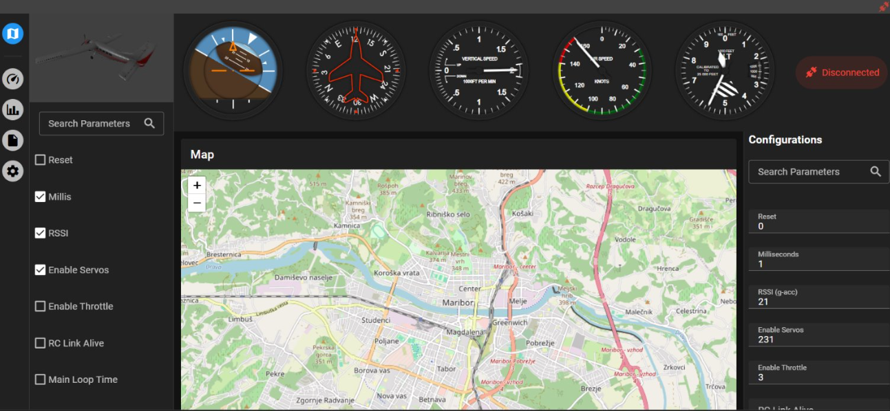
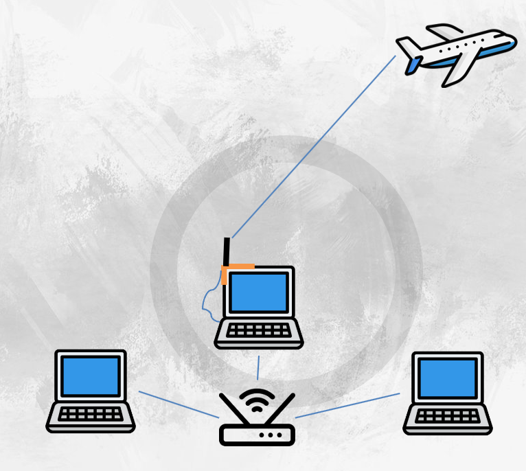

ESP-NOW Telemetry System | 2025ESP-NOW telemetrijski sistem | 2025
OverviewPregled
The ADUM Ground Station is a telemetry and configuration platform developed for the AIAA
Design/Build/Fly aircraft at the Aeronautical Society of the University of Maribor.
It provides real-time monitoring and in-flight parameter tuning for an autonomous aircraft.
ADUM Zemeljska postaja je telemetrijska in konfiguracijska platforma, razvita za letalo projekta
AIAA Design/Build/Fly pri Aeronavtičnem društvu Univerze v Mariboru.
Omogoča spremljanje v realnem času in nastavljanje parametrov med letom za avtonomno letalo.
Operating at 20 Hz, the system transmits attitude, altitude, velocity, and PID data with low latency.
Each flight is automatically logged for analysis, and full aircraft configurations can be
uploaded before take-off.
Sistem deluje pri 20 Hz in pošilja podatke o nagibu, višini, hitrosti in PID vrednostih z majhno zakasnitvijo.
Vsak let se samodejno zabeleži za analizo, celotne konfiguracije letala pa se lahko naložijo pred vzletom.
Communication uses the ESP-NOW protocol on ESP32’s 2.4 GHz antenna, providing direct data transfer
without Wi-Fi or cellular networks.
Komunikacija uporablja protokol ESP-NOW na 2,4 GHz anteni ESP32, kar omogoča neposreden prenos podatkov
brez uporabe Wi-Fi ali mobilnih omrežij.
Dashboard InterfaceUporabniški vmesnik
A Vue.js dashboard displays telemetry through live charts, gauges, and GPS maps. It supports dual
data streams, in-flight PID tuning, and automatic recording with playback for post-flight evaluation.
Nadzorna plošča Vue.js prikazuje telemetrijo prek grafov, merilnikov in GPS zemljevidov.
Podpira dvojni prenos podatkov, nastavljanje PID parametrov med letom ter samodejno beleženje z možnostjo predvajanja po letu.

Technology StackTehnološki sklad
MCU:Mikrokrmilnik: ESP32-WROOM-32E (krmilnik leta & sprejemnik)
Features:Funkcionalnosti: Telemetrija v živo, nastavitve parametrov, beleženje letov, nalaganje konfiguracij

Testing & TeamTestiranja in ekipa
The software and flight teams conducted weekly outdoor tests of the autonomous aircraft, using the
ground station as supporting software for live telemetry and configuration during flights.
Programska in letalska ekipa sta izvajali tedenska testiranja avtonomnega letala na prostem,
pri čemer je zemeljska postaja služila kot podporna programska oprema za telemetrijo v živo in konfiguracijo med letom.
At the 2025 AIAA Design/Build/Fly competition, the autonomous system placed 4th in Mission 3
out of 110+ teams, demonstrating the reliability of both communication and control subsystems.
Na tekmovanju 2025 AIAA Design/Build/Fly je avtonomni sistem osvojil 4. mesto v misiji 3
med 110+ ekipami, kar je potrdilo zanesljivost komunikacijskega in krmilnega podsistema.
A small JSBSim + Three.js simulator was created to visualize and test autonomous landing algorithms
before real flights. It replicates control behavior and flight dynamics for software-in-the-loop validation.
Razvit je bil manjši simulator JSBSim + Three.js za vizualizacijo in testiranje algoritmov za avtonomno pristajanje
pred dejanskimi leti. Simulira obnašanje krmilnih sistemov in dinamiko leta za preverjanje programske logike.